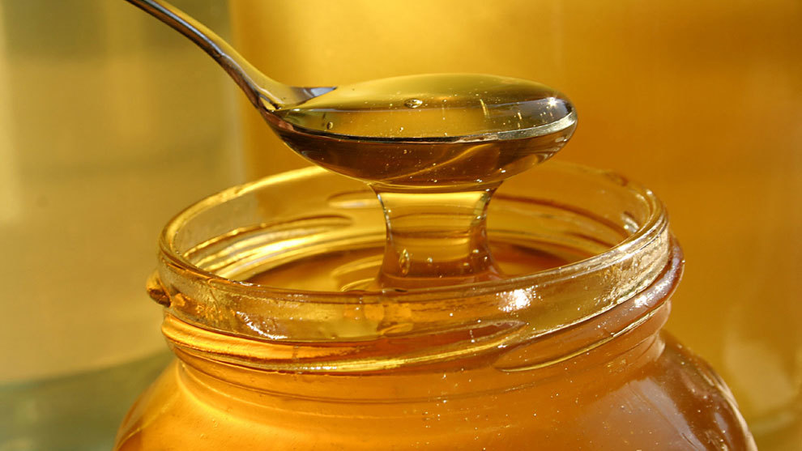
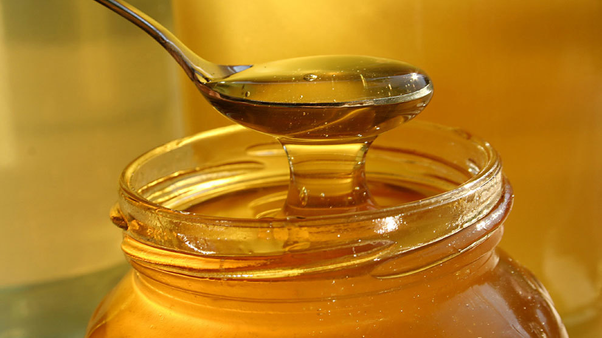

ABEJAS Y ZANGANOS

La mejor miel, de alta montaña.
La mejor miel, de alta montaña.
¿Por qué es tan importante la miel?
La miel es importante no solo por su sabor y versatilidad en la alimentación, sino también por sus propiedades medicinales y beneficios para la salud. Es un alimento natural rico en antioxidantes, vitaminas y minerales, lo que la convierte en un excelente refuerzo inmunológico.
 

Contenido de la tercera sección.